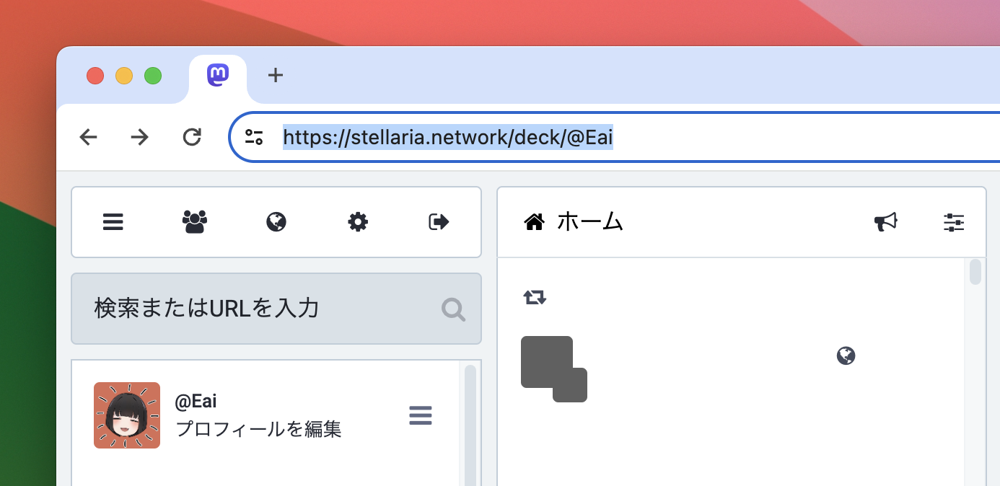

Enter the Server URL. The easiest way to find your Server URL is by opening your Mastodon timeline and then copying the entire URL from your browser's address bar.
To test, click the prominent link located just below the input field. Verify that it populates your Mastodon server's post field with the page's title and URL.
If the bookmarklet works correctly, drag the link to your bookmarks bar to save it. You can then use it from any page.
You can quote a sentence by selecting it and then opening the bookmarklet.
When creating it, if you check "Open in new window" from Customize, a window will open instead of a tab.